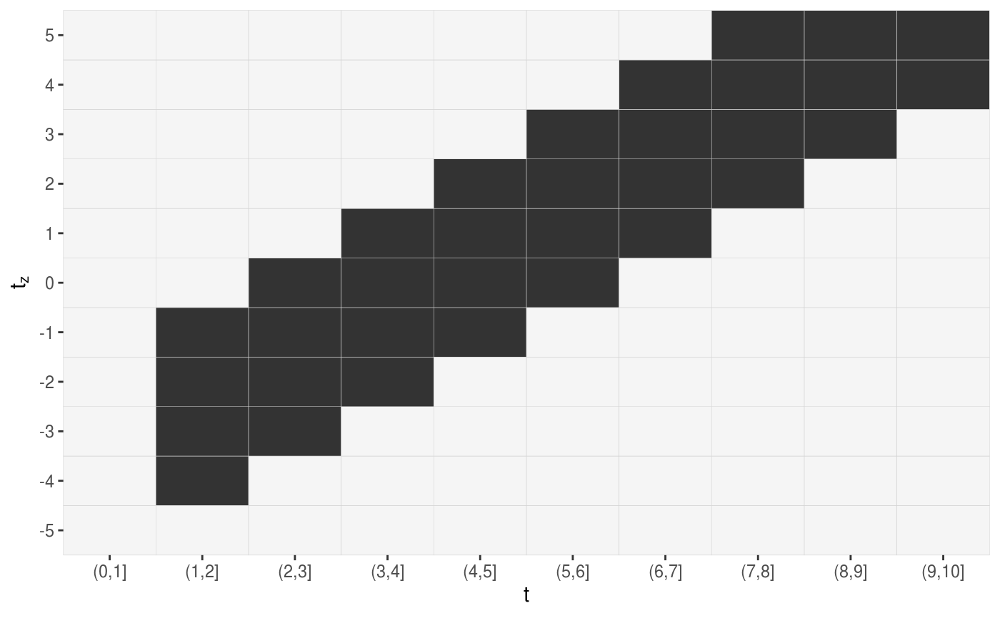
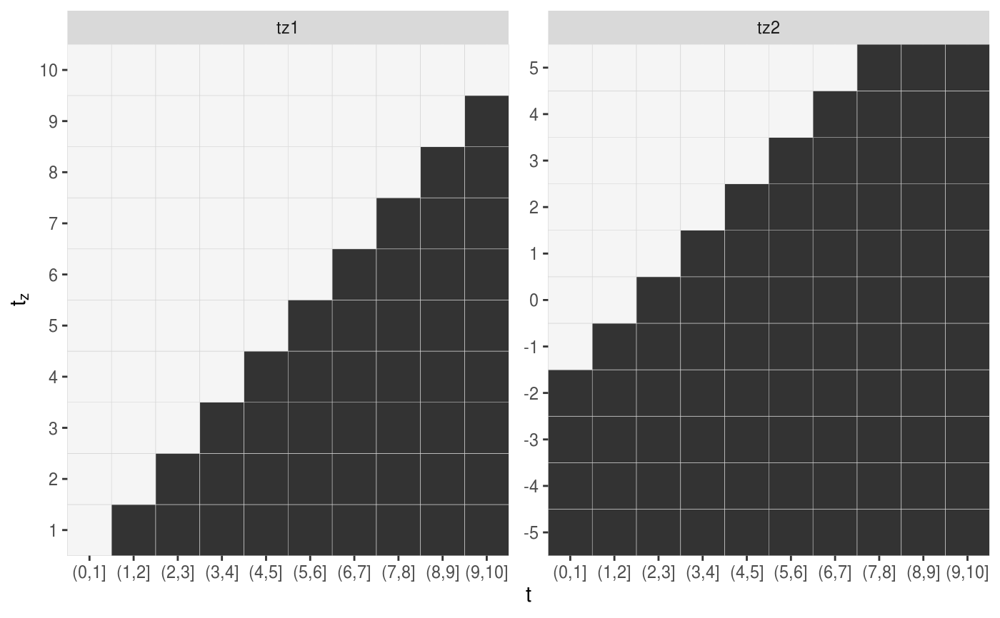

Given data defining a Lag-lead window, returns respective plot as a
ggplot2 object.
gg_laglead(x, ...) # S3 method for default gg_laglead(x, tz, ll_fun, ...) # S3 method for LL_df gg_laglead(x, high_col = "grey20", low_col = "whitesmoke", grid_col = "lightgrey", ...) # S3 method for nested_fdf gg_laglead(x, ...)
| x | Either a numeric vector of follow-up cut points or a suitable object. |
|---|---|
| ... | Further arguments passed to methods. |
| tz | A vector of exposure times |
| ll_fun | Function that specifies how the lag-lead matrix should be constructed. First argument is the follow up time second argument is the time of exposure. |
| high_col | Color used to highlight exposure times within the lag-lead window. |
| low_col | Color of exposure times outside the lag-lead window. |
| grid_col | Color of grid lines. |
get_laglead
## Example 1: supply t, tz, ll_fun directly gg_laglead(1:10, tz=-5:5, ll_fun=function(t, tz) { t >= tz + 2 & t <= tz + 2 + 3})## Example 2: extract information on t, tz, ll_from data with respective attributes data("simdf_elra", package = "pammtools") gg_laglead(simdf_elra)